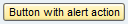
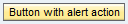
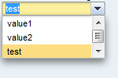
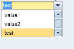
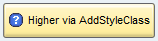
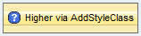
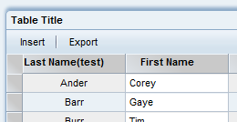
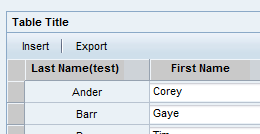

Support for "older" Browsers
SAPUI5 has been tailored for best-of-breed HTML5/CSS3 browsers. What about older, but still commonly used browsers like FireFox 3.6 or IE8?
Degradations by Feature
Rounded Corners
IE8 and below don't support the CSS property border-radius. As a result, all controls for which a theme uses that property, won't have rounded but square corners. In the UX theme this affects Button, ComboBox, DatePicker(+ its Popup), DropdownBox, ListBox, MessageBar, Panel, ProgressIndicator, TextArea, TextField
Example: The Button
| FireFox 3.6 | Internet Explorer 8 |
|  |  |
Box-Shadow
IE8 and below don't support the CSS property box-shadow. As a result, all controls for which a theme uses that property, won't have a shadow. Most often this property is used to either enhance a 3D effect (eg. along verticall edges) or to drop a shadow for a box "floating" above other content (all kinds of Popup).
In the UX theme, this affects Button(3D), ComboBox(Popup), DatePicker(Popup), DropdownBox(Popup), Menu(Popup), MenuButton(Popup), MessageBar(+Popup), ProgressIndicator(3D), RichTooltip, TextArea(3D), TextField(3D), Toolbar(OverflowMenu)
Example: Popup of ComboBox
| FireFox 3.6 | Internet Explorer 8 |
|  |  |
Background-Size
IE8 and below don't support the property background-size which allows to stretch a background image or gradient.
Affects: Button
Example: A Button with an expliticly set height
| FireFox 3.6 | Internet Explorer 8 |
|  |  |
Gradient Backgrounds
IE8 only supports gradients in a limited way, so some gradients may be missing.
Affects: Table
Example: Pay attention to the table header and row selectors at the left-hand side
| FireFox 3.6 | Internet Explorer 8 |
|  |  |
Native Scrollbars
Example: See ComboBox example above..
Degradations by Control
| Control | Corners | Shadow | BG Size | Gradients | Scollbars | Degradations (IE8) |
| Accordion | ||||||
| Button | No rounded corners, vertical edges don't show a 3D effect, background doesn't scale when button size differs from default height | |||||
| CheckBox | ||||||
| ComboBox | No rounded corners, No 3D effect for vertical edges, Popup doesn't have a shadow | |||||
| DatePicker | No rounded corners, No 3D effect for vertical edges, Popup doesn't have a shadow | |||||
| Dialog | Native Scrollbars | |||||
| DropdownBox | No rounded corners, No 3D effect for vertical edges, Popup doesn't have a shadow | |||||
| FileUploader | Inherited from the used components InputField and Button | |||||
| HorizontalDivider | ||||||
| Image | ||||||
| Label | ||||||
| Link | ||||||
| ListBox | No rounded corners, No 3D effect for vertical edges | |||||
| Menu | Popup doesn't have a shadow | |||||
| MenuButton | No rounded corners, vertical edges don't show a 3D effect, background doesn't scale when button size differs from default height;Popup doesn't have a shadow | |||||
| MenuBar | MenuItems don't show rounded corners | |||||
| MessageBar | No rounded corners, No shadow, MessageList Popup does't have a shadow | |||||
| MessageBox | ||||||
| Panel | Native Scrollbars | |||||
| ProgressIndicator | No rounded corners, no 3D effect for vertical edges | |||||
| RadioButton | ||||||
| RichTooltip | Doesn't drop a shadow; if it would drop a shadow, the shadow wouldn't have rounded corners | |||||
| RoadMap? | ||||||
| Slider | ||||||
| Splitter | ||||||
| Table | Native Scrollbars, Headers/Line markers only show 2-colors instead of gradient | |||||
| TabStrip? | ||||||
| TextArea | No rounded corners, No 3D effect for vertical edges, | |||||
| TextField | No rounded corners, No 3D effect for vertical edges, | |||||
| TextView | ||||||
| Toolbar | Overflow Menu doesn't drop a shadow |